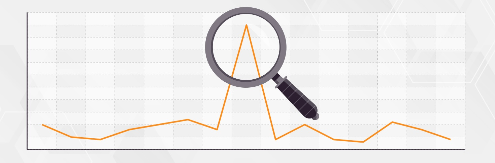

PROJECTS

ANOMALY DETECTION
Read more »
TOLKIEN IN ME
Read more »

TOXIC COMMENT CLASSIFICATION
Read more »
KUZUSHIJI HIRAGANA CLASSIFIER
Read more »
ENGLISH TO JAPANESE TRANSLATOR
Read more »
ANSWERING TWO SUPPORTING FACT QUESTIONS USING MEMORY NETWORK
Read more »
SPEECH RECOGNITION SYSTEM
Read more »